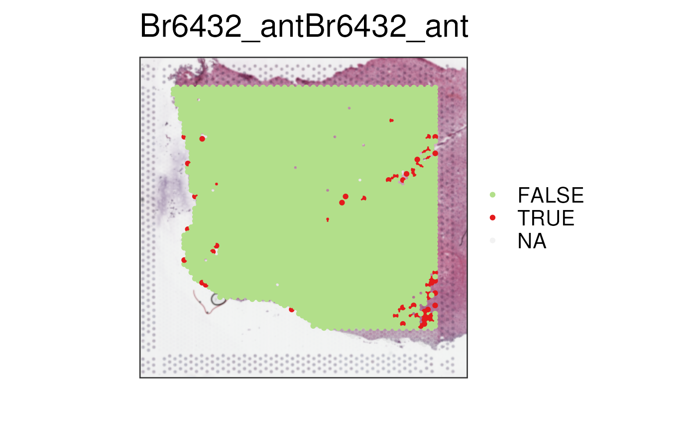
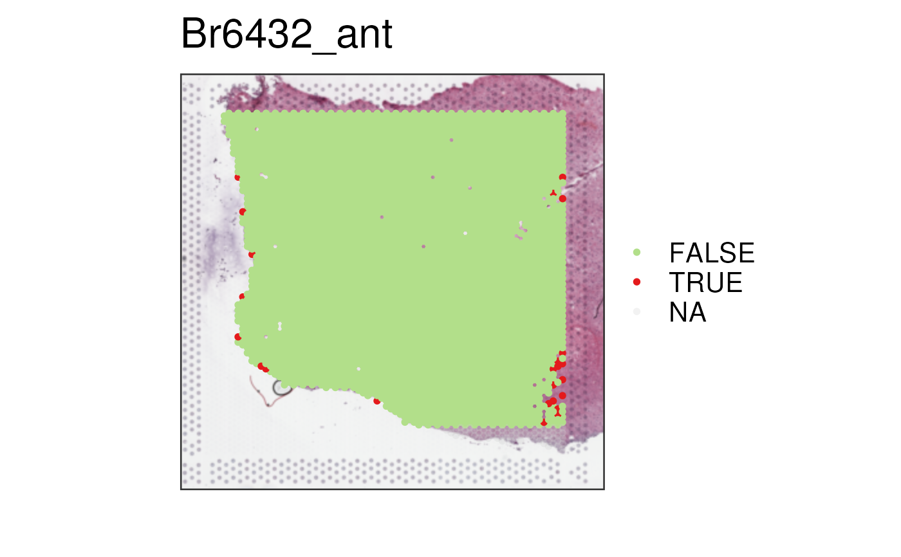

This function identify spots in a
SpatialExperiment-class (SPE)
with outlier quality control values: low sum_umi or sum_gene, or high
expr_chrM_ratio, utilizing scuttle::isOutlier. Also identifies in-tissue
edge spots and distance to the edge for each spot.
add_qc_metrics(spe, overwrite = FALSE)a SpatialExperiment
object that has sum_umi, sum_gene, expr_chrM_ratio, and in_tissue
variables in the colData(spe). Note that these are automatically created
when you build your spe object with spatialLIBD::read10xVisiumWrapper().
a logical(1) specifying whether to overwrite the 7
colData(spe) columns that this function creates. If set to FALSE and any
of them are present, the function will return an error.
with added quality control information added to the colData().
scran_low_lib_sizeshows spots that have a low library size.
scran_low_n_featuresspots with a low number of expressed genes.
scran_high_Mito_percentspots with a high percent of mitochondrial gene expression.
scran_discardspots belonging to either scran_low_lib_size,
scran_low_n_feature, or scran_high_Mito_percent.
edge_spotspots that are automatically detected as the edge spots
of the in_tissue section.
edge_distanceclosest distance in number of spots to either the vertical or horizontal edge.
scran_low_lib_size_edgespots that have a low library size and are an edge spot.
The initial version of this function lives at https://github.com/LieberInstitute/Visium_SPG_AD/blob/master/code/07_spot_qc/01_qc_metrics_and_segmentation.R.
## Obtain the necessary data
spe_pre_qc <- fetch_data("spatialDLPFC_Visium_example_subset")
#> snapshotDate(): 2024-04-29
#> 2024-07-12 13:30:58.248283 loading file /Users/leocollado/Library/Caches/org.R-project.R/R/BiocFileCache/6f563a40ecf7_spatialDLPFC_spe_subset_example.rds%3Fdl%3D1
## For now, we fake out tissue spots in example data
spe_qc <- spe_pre_qc
spe_qc$in_tissue[spe_qc$array_col < 10] <- FALSE
## adds QC metrics to colData of the spe
spe_qc <- add_qc_metrics(spe_qc, overwrite = TRUE)
vars <- colnames(colData(spe_qc))
vars[grep("^(scran|edge)", vars)]
#> [1] "scran_discard" "scran_high_subsets_Mito_percent"
#> [3] "scran_low_lib_size" "scran_low_n_features"
#> [5] "scran_quick_cluster" "scran_high_Mito_percent"
#> [7] "edge_spot" "edge_distance"
#> [9] "scran_low_lib_size_edge"
## visualize edge spots
vis_clus(spe_qc, sampleid = "Br6432_ant", clustervar = "edge_spot")
vis_gene(spe_qc, sampleid = "Br6432_ant", geneid = "edge_distance", minCount = -1)
## Visualize scran QC flags
## Check the spots with low library size as detected by scran::isOutlier()
vis_clus(spe_qc, sample_id = "Br6432_ant", clustervar = "scran_low_lib_size")
## Violin plot of library size with low library size highlighted in a
## different color.
scater::plotColData(spe_qc[, spe_qc$in_tissue], x = "sample_id", y = "sum_umi", colour_by = "scran_low_lib_size")

## Check any spots that scran::isOutlier() flagged
vis_clus(spe_qc, sampleid = "Br6432_ant", clustervar = "scran_discard")
## Low library spots that are on the edge of the tissue
vis_clus(spe_qc, sampleid = "Br6432_ant", clustervar = "scran_low_lib_size_edge")
## Use `low_library_size` (or other variables) and `edge_distance` as you
## please.
spe_qc$our_low_lib_edge <- factor(
spe_qc$scran_low_lib_size == "TRUE" &
spe_qc$edge_distance < 5,
levels = c("TRUE", "FALSE")
)
vis_clus(spe_qc, sample_id = "Br6432_ant", clustervar = "our_low_lib_edge")

## Clean up
rm(spe_qc, spec_pre_qc)
#> Warning: object 'spec_pre_qc' not found